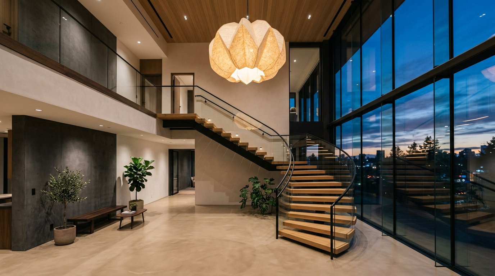

The Oak House
DHA Phase 6, Lahore
A concrete-shell loft turned into a photography studio that doubles as a set.

Studio Mera shoots furniture campaigns, so their own space had to earn its keep as a location. We kept the raw concrete columns and black steel, then slid in a warm oak mezzanine, curtain walls on rails and a lighting grid that reconfigures in minutes.
Downstairs works as a studio four days a week and an event space on the fifth. Nothing in the fit-out takes longer than two people and ten minutes to reset.


Keep exploring